PARKING MADE EASY
MEasyPark: Simplifying Campus Parking at the University of Michigan
A mobile-first solution designed exclusively for University of Michigan students with valid parking permits. Streamlines the campus parking experience by making it easy to find parking lots across campus by permit type.
Improves time efficiency
Lot navigation made easy
Team 6: Xingyue Wang, Sam Kowitch, Angelina Roundfield, Qier Long
Click to Try the Live Prototype Interactive demo ready — explore the full experience

THE CHALLENGE
Understanding the Problem
Through user research and interviews with University of Michigan students, we identified critical pain points in the campus parking experience that needed urgent attention.
Hard to Find
Lack of parking spot availability and parking lot findability make it difficult to plan ahead.
Time Consuming
Students are often late to class because they are unable to find parking quickly.
Permit Confusion
The current MGoPark app lacks information for various types of parking permits.
Class Anxiety
Stress about being late to class or missing exams due to unpredictable parking availability.

Class schedule dictates parking behavior
Students have to be strategic about when they search for parking spots, as places typically only become available in between classes.
THE SOLUTION
A Campus-Specific Parking Experience
MEasy Park brings together real-time campus lot availability, permit verification, and class schedule integration into one intuitive mobile experience for U-M students.
Reduce Late Arrivals
Real-time parking alerts and personalized parking spots helps save time finding parking
Reduce Information Barriers
No more overwhelming website text info for first-time users
Inclusive Access
Supports all permit types, EV. Provides strong accessibility features

Design Principles
User Control and Freedom
"Don't let unnecessary elements distract users from the information they really need."
–Nielson Heuristic #8
Aesthetic and Minimal Design
Clear lot availability and permit verification reduce stress before exams.
Campus Context
Integration with academic schedules and campus building locations.
Mobile Interface
Explore the complete MEasy Park mobile experience through our interactive prototype.
Try the interactive prototype →
Home & Map View
Real-time campus map with color-coded permit zones and parking availability

Navigation Menu
Simple, organized menu for quick access to permits, parking, and account settings
Permit Management
Clear permit type explanation with visual color coding for easy identification

Support & Feedback
Multiple support channels including feedback submission, contact options, and FAQ access

Settings & Preferences
Accessibility features, language options, and quick access to important site sections

About & Information
Learn about MEasy Park, the team, and access privacy policy information

Account Management
Manage personal information, saved locations, alerts, and account settings
DESIGN PROCESS
A Human-Centered Approach
Our iterative design process ensured every decision was grounded in user needs and validated through continuous testing.
Research
Conducted student interviews, competitive analysis, and journey mapping to understand campus parking challenges.
- Student personas
- Journey maps
- Research synthesis
Ideation
Collaborative design workshops to generate and prioritize campus-specific solutions.
- Brainstorming
- Site mapping
- Information architecture
Design
Created wireframes, prototypes, and mid-fidelity mockups tailored to U-M campus needs.
- Mid-Fi Wireframes
- Interactive prototypes
- Tailored mockups
Testing
Conducted eight usability tests with University of Michigan students, refining based on their feedback.
- Usability reports
- Test findings
- Final recommendations
1. RESEARCH
Preparation and information gathering
Interviews
We began with research on MGoPark app and interviews with students who regularly park on campus. These activities allowed us to gather detailed insights into their daily parking habits, challenges, and functional needs, which informed the initial direction of our design.
"Parking is based on proximity - I get to the parking lot when its still dark and don't want to walk a long ways."
"The big issue is, it doesn't cover orange permit lots, and that's exactly the permit I use. So for me it was basically useless."
"The app also fails to give live updates, the map is static and not interactive, and setting times feels tedious and confusing."
"The app could send me a daily alert, like if I always leave at 9:30, it texts me: 'Hey, there are 15 spots in Lot B."
"For me the most important thing is just whether there is a spot at all, and also the time it takes. After that comes distance, then safety. Price is honestly the last thing I care about."
"It would also stop the problem of blue permits being resold for super high prices"
User Personas
Based on our research, we developed two key personas representing our primary user groups — students who drive to campus daily with different parking needs and behaviors.
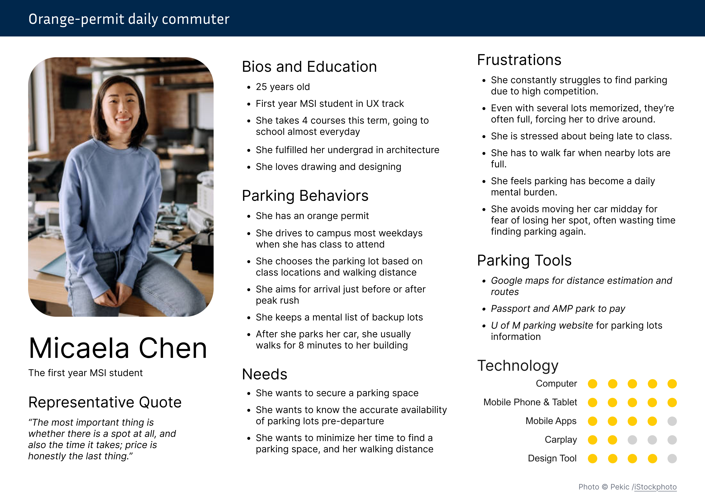
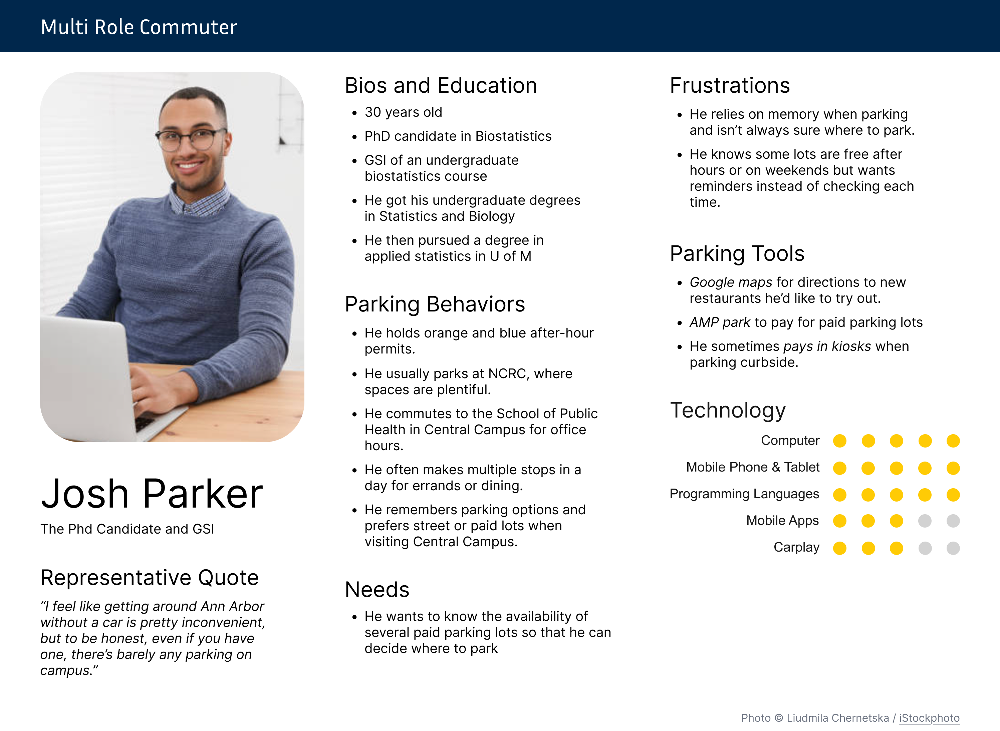
2. IDEATION
Brainstorming and Solution Generation
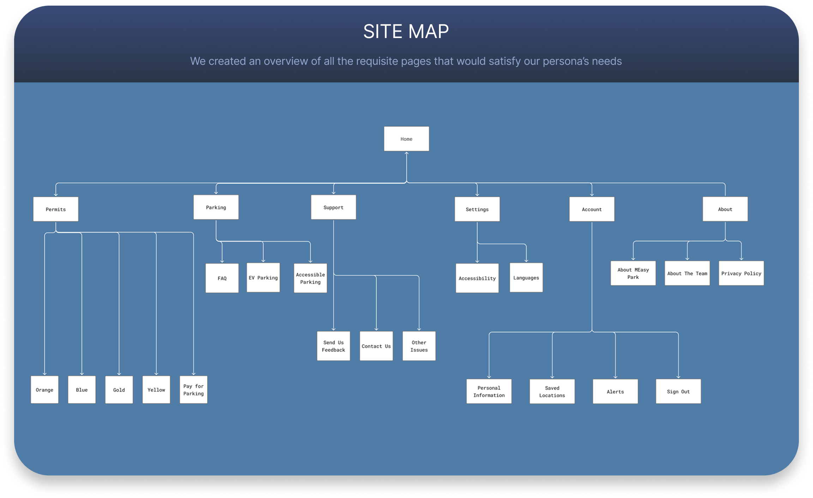
Navigation
We created an global footer and local left for the website
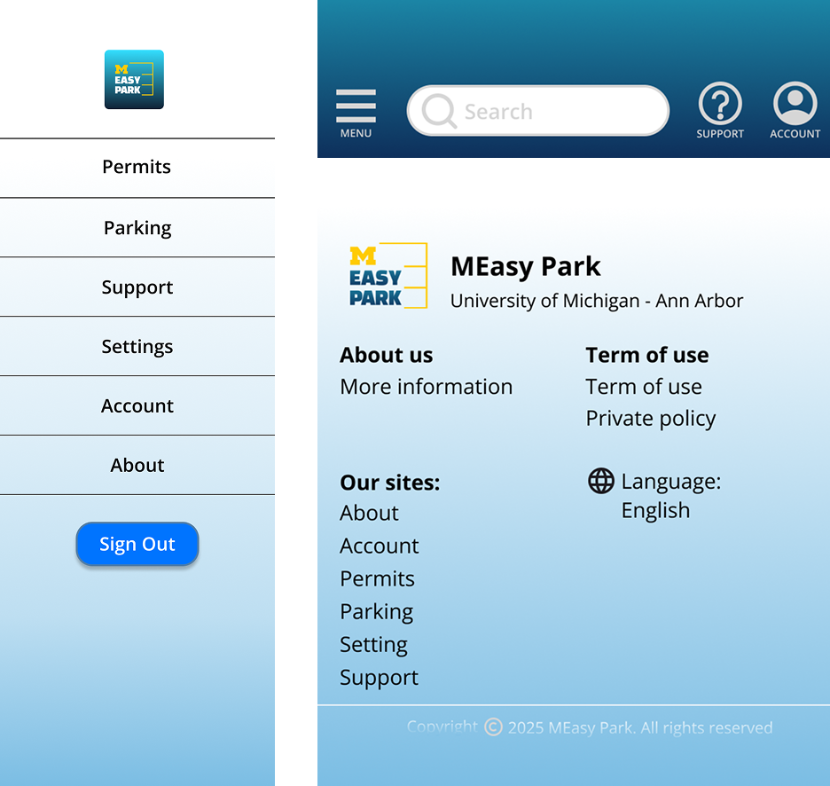
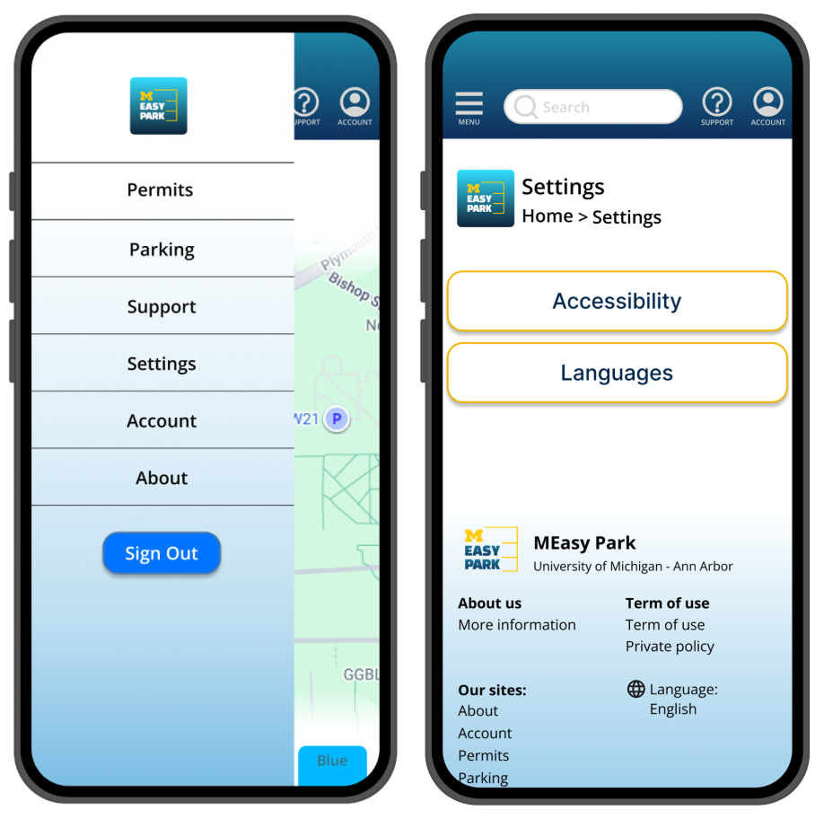
Wireframe and User Flow Diagram
We created a mid-fidelity prototype with our sitemap and corresponding user flow diagram for each page
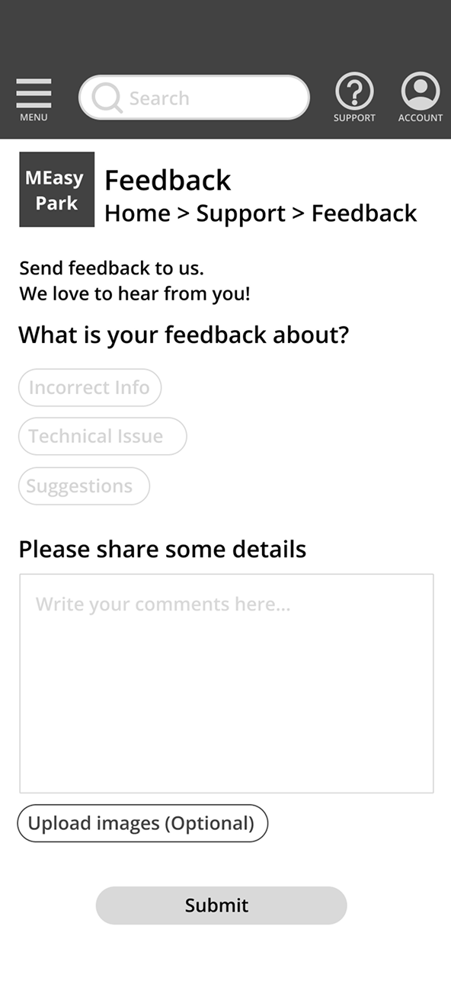
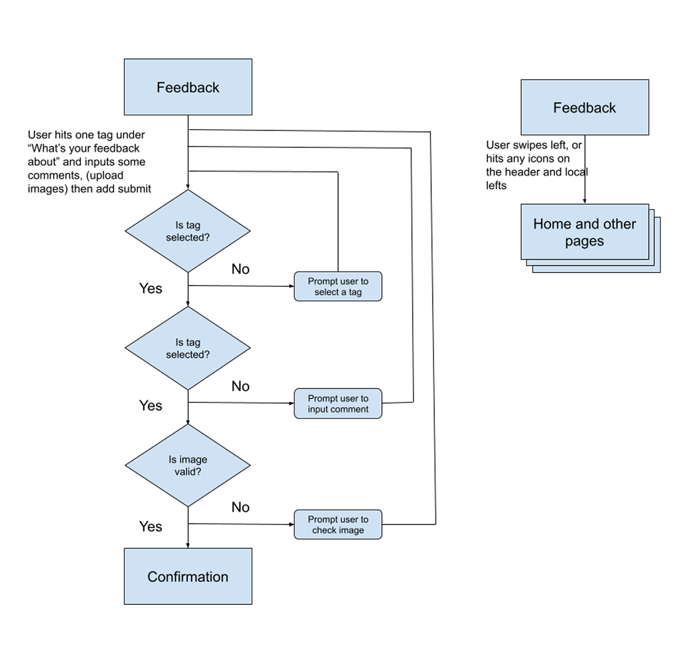
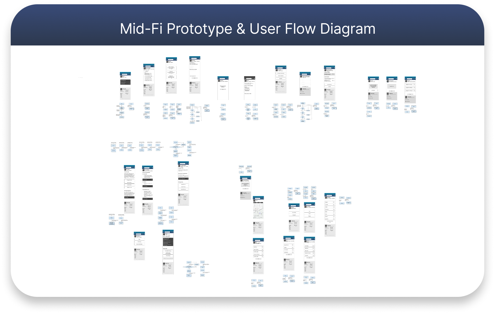
3. USABILITY TESTING
We ran moderated usability tests with real U-M student drivers to validate core parking flows before high-fidelity design
Research Protocol
We ran a structured usability study of MEasyPark using a Figma prototype on participants' own phones to evaluate critical flows like setting a default parking location, checking permit status, and submitting feedback. One-on-one Zoom sessions with observers, clearly defined team roles, and targeted recruiting of U-M student drivers showed our ability to plan, facilitate, and analyze rigorous testing under real-world constraints.
Test Script & Tasks
The usability script guided participants through three core tasks while encouraging think-aloud commentary to surface pain points and mental models.
- Set a default parking location
- Check orange permit status
- Submit support feedback
Moderators followed a structured but flexible script with intros, task prompts, and brief follow-ups, adapting wording to stay conversational and reduce bias.
Participants & Recruiting
Participants were U-M students who commute to campus by car, hold a university parking permit, and park regularly on North and Central Campus, ensuring strong alignment with our target users. We excluded UX-track students to avoid expert bias and initially enforced all criteria, then relaxed them after 24 hours to increase response rates, balancing rigor with pragmatism.
Key Findings
Interface feels static
Users wanted richer, more interactive flows, especially around the map, permit info, and saving locations.
"If there was an interactive map that would be nice."—
P2
Navigation is hard to read
Finding permit details, understanding the homepage, and using the menu/logo as 'Home' were often confusing.
"I think that's kind of confusing to find those information."—
P4
Promising concept, weak execution
Participants liked the idea of a parking helper but felt the current mobile site is cumbersome and not yet worth using daily.
"I like the purpose of the website, but I do not like the current design features."—
P6
How this informed the design
Introduced an interactive, filterable map by permit type.
Clarified navigation and made 'Home' affordances explicit.
Refined value proposition and onboarding for first-time users.
4. DESIGN ITERATION
From Mid-Fi to Hi-Fi Prototypes
Clearer permit selection
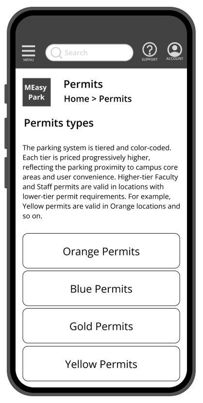
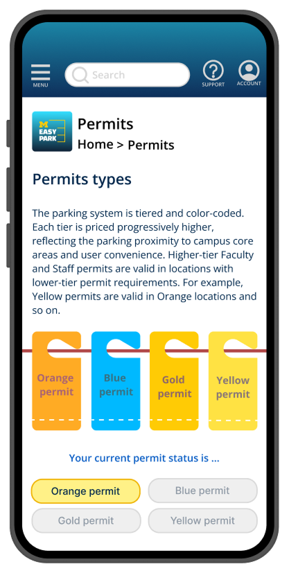
🔍 FINDING
Users were overwhelmed by text on screen, lack of icons resulted in slower processing time
"I don't see a yellow permit option on the home page."P5
🎨 DESIGN DECISION
Replaced flat buttons with color-coded permit cards and supporting icons to improve scanning. Colored permit filters catch the users eye quickly and permit visual design communicates intent better than flat buttons
✅ OUTCOME
5/7 participants initially selected the correct permit, after the redesign, users can identified it on first glance.
More legible global navigation
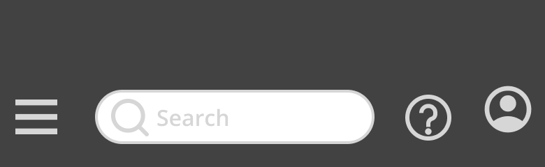
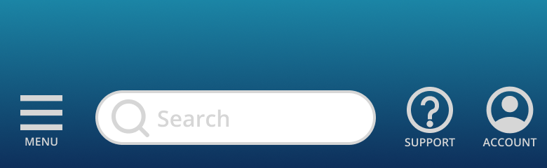
🔍 FINDING
Unlabeled header icons confused users; several didn't realize there was a menu or support entry
"I think the menu sign can be more noticeable, like a label under this logo."P1
🎨 DESIGN DECISION
Added text labels (Menu, Support, Account) under icons to clarify their purpose.
✅ OUTCOME
All 7 participants noticed on the unlabeled icons; labeled icons reduced mistakes on navigation tasks.
Footer as a reliable path
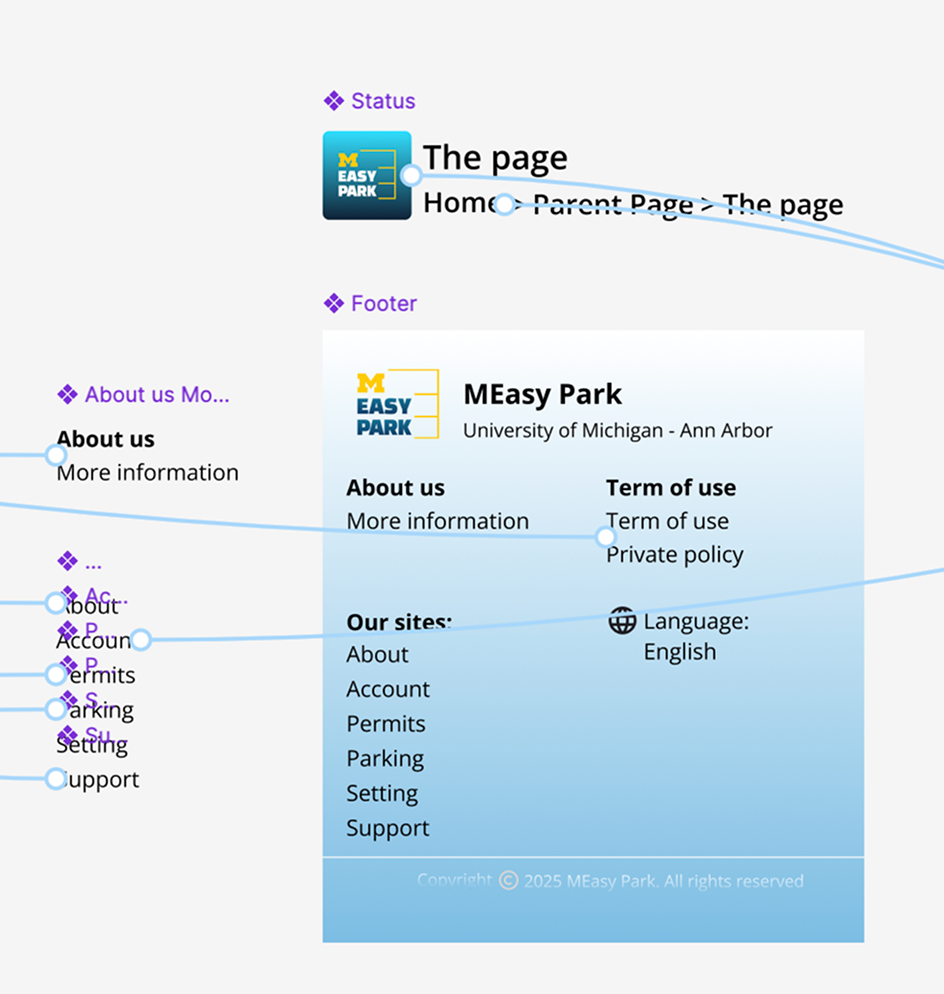
🔍 FINDING
Users relied on the footer more than expected to navigate between pages
"I am more used to navigating through the footer."P1
🎨 DESIGN DECISION
Made all footer labels clickable and clarified information hierarchy.
✅ OUTCOME
Most users used footer links to move between key pages; making them fully clickable reduced backtracking.
Visual Design System
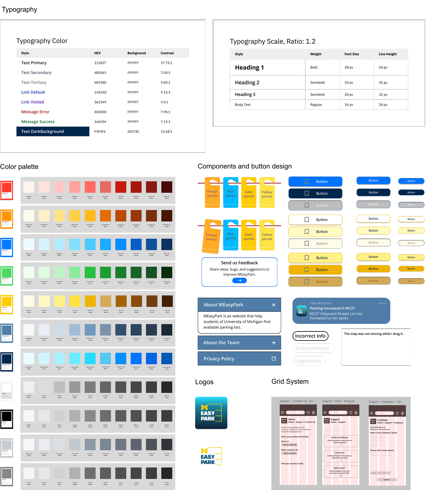
🔍 FINDING
- Typography decision
- Color palette decision
- Logo design
- New form controls design
- Colored buttons design
🎨 DESIGN DECISION
We selected navy blue and harbor blue as the primary colors for the website, complemented by gold and other yellow tones as the secondary accent colors.
✅ OUTCOME
The hi-fi prototype used this design system to clarify the site structure and reduce the cognitive burden of the earlier monotone palette.
5. CONCLUSION
Our Findings
Key Learnings
Students prioritized speed and reliability—getting to class on time was the primary concern.
Information for all permit levels is important for students navigating to the right parking lots
Use of color and visual design help user navigate to the happy path more easily
Clear visual feedback improves the usability of the parking solution
6. CONTRIBUTION STATEMENT